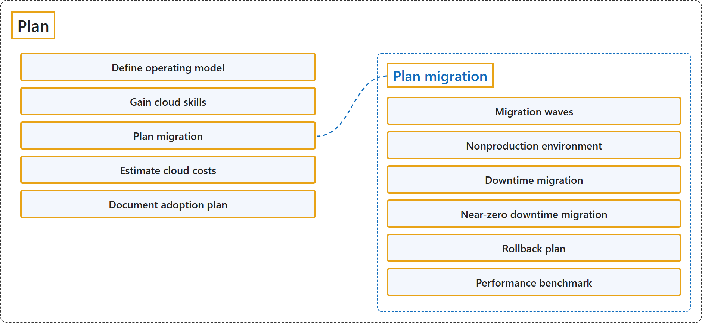

26.2 Plan
Classification

Glossary
| Term | Definition | 中文解释 | Source |
|---|---|---|---|
| Plan 规划 |
"A cloud adoption plan converts your cloud strategy into an actionable plan that's specific to your goals." | 云采用计划把你的云战略转化为可执行的计划，并针对你的目标。 | Microsoft, 2025d, para. 1 |
| Define operating model 定义运营模式 |
"A cloud operating model defines how your organization manages cloud resources, team responsibilities, and collaboration." | 云运营模式定义了你的组织如何管理云资源、团队职责和协作。 | Microsoft, 2025d, "Choose a cloud operating model" section, para. 1 |
| Gain cloud skills 获取云技能 |
(context) "This article provides guidance to equip your team with the skills necessary for successful Azure adoption." | （语境）本文提供指导，帮助让你的团队具备成功采用 Azure 所需的技能。 | Microsoft, 2025e, para. 1 |
| Plan migration 规划迁移 |
"A migration plan defines the specific order, timing, and approach for migrating workloads to Azure." | 迁移计划定义了把工作负载迁移到 Azure 的具体顺序、时间和方法。 | Microsoft, 2025c, para. 1 |
| Migration waves 迁移波次 |
(context) "Organize large portfolios into migration waves." | （语境）把大型项目组合组织成迁移波次。 | Microsoft, 2025c, "Determine the migration sequence" section, para. 1 |
| Nonproduction environment 非生产环境 |
(context) "Move non-production environments before production. Nonproduction environments provide a safe space to test the full migration process." | （语境）先迁移非生产环境，再迁移生产环境。 非生产环境提供了一个测试完整迁移过程的安全空间。 | Microsoft, 2025c, "Prioritize workloads to migrate" section, item 3 |
| Downtime migration 停机迁移 |
"Downtime migration is simpler and faster because it doesn't require real-time synchronization between source and target environments. This method works well for noncritical workloads such as development environments, test systems, or applications with scheduled maintenance windows." | 停机迁移更简单、更快，因为它不需要源环境和目标环境之间的实时同步。这种方法适合非关键工作负载，例如开发环境、测试系统，或有计划维护时段的应用程序。 | Microsoft, 2025c, "Choose the migration method for each workload" section, item 1 |
| Near-zero downtime migration 近零停机迁移 |
"Near-zero downtime migration ensures that critical workloads remain operational during the transition through continuous data replication and cutover techniques." | 近零停机迁移确保关键工作负载在过渡期间保持运行，方法是持续的数据复制和切换技术。 | Microsoft, 2025c, "Choose the migration method for each workload" section, item 2 |
| Rollback plan 回滚计划 |
"A rollback plan enables teams to quickly reverse changes when a deployment fails or introduces risk." | 回滚计划让团队能够快速撤回变更，用于部署失败或带来风险的情况。 | [Microsoft, 2025c, "Define rollback plan" section, para. 1](https://learn.microsoft.com/en-us/azure/cloud-adoption-framework/migrate/plan-migration#:~:text=A%20rollback%20plan%20enables%20teams |
| Performance benchmark 性能基准 |
(context) "Set measurable metrics including performance benchmarks, functionality validation, and user acceptance criteria." | （语境）设定可衡量的指标，包括性能基准、功能验证和用户验收标准。 | Microsoft, 2025c, "Engage stakeholders on migration plan" section, item 5 |
| Estimate cloud costs 估算云成本 |
(context) "This article defines how to create accurate cost estimates for your Azure environment by documenting architectural decisions and service selections." | （语境）本文说明如何通过记录架构决策和服务选择，为你的 Azure 环境创建准确的成本估算。 | Microsoft, 2025b, para. 1 |
| Document adoption plan 记录采用计划 |
"A cloud adoption plan provides a single source of truth for all decisions, estimates, and strategies related to Azure adoption." | 云采用计划为与 Azure 采用相关的所有决策、估算和战略提供唯一的事实来源。 | Microsoft, 2025a, para. 1 |
References
- Microsoft. (2025a, July 15). Document your cloud adoption plan. Cloud Adoption Framework. Microsoft Learn. https://learn.microsoft.com/en-us/azure/cloud-adoption-framework/plan/document-cloud-adoption-plan
- Microsoft. (2025b, July 15). Plan your Azure environment for cost estimation. Cloud Adoption Framework. Microsoft Learn. https://learn.microsoft.com/en-us/azure/cloud-adoption-framework/plan/estimate-total-cost-of-ownership
- Microsoft. (2025c, August 1). Plan your migration. Cloud Adoption Framework. Microsoft Learn. https://learn.microsoft.com/en-us/azure/cloud-adoption-framework/migrate/plan-migration
- Microsoft. (2025d, July 15). Prepare your organization for the cloud. Cloud Adoption Framework. Microsoft Learn. https://learn.microsoft.com/en-us/azure/cloud-adoption-framework/plan/
- Microsoft. (2025e, July 15). Prepare your people for the cloud. Cloud Adoption Framework. Microsoft Learn. https://learn.microsoft.com/en-us/azure/cloud-adoption-framework/plan/prepare-people-for-cloud